HOA global drift (bimodal)
Joseph Marcus
2020-04-30
Last updated: 2020-05-09
Checks: 7 0
Knit directory: drift-workflow/analysis/
This reproducible R Markdown analysis was created with workflowr (version 1.6.1). The Checks tab describes the reproducibility checks that were applied when the results were created. The Past versions tab lists the development history.
Great! Since the R Markdown file has been committed to the Git repository, you know the exact version of the code that produced these results.
Great job! The global environment was empty. Objects defined in the global environment can affect the analysis in your R Markdown file in unknown ways. For reproduciblity it’s best to always run the code in an empty environment.
The command set.seed(20190211) was run prior to running the code in the R Markdown file. Setting a seed ensures that any results that rely on randomness, e.g. subsampling or permutations, are reproducible.
Great job! Recording the operating system, R version, and package versions is critical for reproducibility.
Nice! There were no cached chunks for this analysis, so you can be confident that you successfully produced the results during this run.
Great job! Using relative paths to the files within your workflowr project makes it easier to run your code on other machines.
Great! You are using Git for version control. Tracking code development and connecting the code version to the results is critical for reproducibility.
The results in this page were generated with repository version a696d62. See the Past versions tab to see a history of the changes made to the R Markdown and HTML files.
Note that you need to be careful to ensure that all relevant files for the analysis have been committed to Git prior to generating the results (you can use wflow_publish or wflow_git_commit). workflowr only checks the R Markdown file, but you know if there are other scripts or data files that it depends on. Below is the status of the Git repository when the results were generated:
Ignored files:
Ignored: .snakemake/
Ignored: data/datasets/
Ignored: data/raw/
Ignored: data/simulations/
Ignored: nb-log-1080241.err
Ignored: nb-log-1080241.out
Ignored: notebooks/.ipynb_checkpoints/
Ignored: output/
Ignored: sandbox/.ipynb_checkpoints/
Note that any generated files, e.g. HTML, png, CSS, etc., are not included in this status report because it is ok for generated content to have uncommitted changes.
These are the previous versions of the repository in which changes were made to the R Markdown (analysis/hoa_global_drift_bimodal.Rmd) and HTML (docs/hoa_global_drift_bimodal.html) files. If you’ve configured a remote Git repository (see ?wflow_git_remote), click on the hyperlinks in the table below to view the files as they were in that past version.
| File | Version | Author | Date | Message |
|---|---|---|---|---|
| Rmd | a696d62 | Joseph Marcus | 2020-05-09 | wflow_publish(“hoa_global_drift_bimodal.Rmd”) |
| html | dfe02ad | Joseph Marcus | 2020-05-09 | Build site. |
| Rmd | e3c2fae | Joseph Marcus | 2020-05-09 | wflow_publish(“hoa_global_drift_bimodal.Rmd”) |
| Rmd | d4d2bf3 | Joseph Marcus | 2020-05-02 | fixed up plotting and added weur to pipeline |
| Rmd | d075c79 | Joseph Marcus | 2020-04-30 | starting drift analysis on hoa global data |
This is an analysis of applying drift of the full Human Origins dataset which includes 2068 sampled from around the world. I filtered out rare variants with global minor allele frequency less than 5%, removed any variants with a missingness fraction greater than 0.5%, and removed any SNPs on the sex chromosomes, resulting in 343758 SNPs … see Human Origins Array Global Data for details on the data pre-processing.
Imports
Lets import some needed packages:
library(ggplot2)
library(tidyr)
library(dplyr)
library(RColorBrewer)
library(knitr)
library(cowplot)
source("../code/structure_plot.R")Functions
Here some helper functions specific to this analysis:
get_pops <- function(meta_df, region){
pops <- meta_df %>%
filter(Region==region) %>%
dplyr::select(Region, Simple.Population.ID, Latitude) %>%
distinct(Simple.Population.ID, Latitude) %>%
arrange(desc(Latitude)) %>%
pull(Simple.Population.ID)
return(pops)
}
create_regional_structure_plot <- function(l_df,
K,
region,
colors,
ymax,
label_font_size=4,
gap=1,
yaxis_tick_font_size=6,
yaxis_title_font_size=6){
l_pop_df <- l_df %>%
filter(Region==region)
pops <- get_pops(meta_df, region)
labels <- as.vector(droplevels(l_pop_df$Simple.Population.ID))
label_order <- as.vector(droplevels(pops))
p <- create_structure_plot(l_pop_df[,1:K],
labels=labels,
colors=colors,
gap=gap,
ymax=ymax,
label_order=label_order,
label_font_size=label_font_size,
yaxis_tick_font_size=yaxis_title_font_size,
yaxis_title_font_size=yaxis_title_font_size)
return(p)
}
prepare_data <- function(rds_prefix, fam_path, K, meta_df, scale_loadings){
# read rds
rds_path <- paste0(rds_prefix, K, ".rds")
fl <- readRDS(rds_path)
# scale the loadings by the prior variances
if(scale_loadings){
EL <- fl$EL %*% diag(sqrt(fl$prior_s2))
} else {
EL <- fl$EL
}
# read the meta data
l_df <- as.data.frame(EL)
colnames(l_df) <- paste0(1:K)
inds <- read.table(fam_path, header=F, stringsAsFactors=F) %>% pull(V2)
l_df$ID <- inds
l_df <- l_df %>% inner_join(meta_df, by="ID")
return(l_df)
}Data
File paths
Here are the needed file paths to the fit and meta data:
rds_prefix <- "../output/drift/hoa_global/HumanOriginsPublic2068_auto_maf05_geno005_mind02_K"
fam_path <- "../data/datasets/hoa_global/HumanOriginsPublic2068_auto_maf05_geno005_mind02.fam"
meta_path <- "../data/meta/HumanOriginsPublic2068.meta"Meta data
Read the meta data for each individual:
meta_df <- read.table(meta_path, sep="\t", header=T)
head(meta_df) ID Simple.Population.ID Verbose.Population.ID Region Country
1 SA1004 Khomani Khomani Africa South_Africa
2 SA063 Khomani Khomani Africa South_Africa
3 SA010 Khomani Khomani Africa South_Africa
4 SA064 Khomani Khomani Africa South_Africa
5 SA073 Khomani Khomani Africa South_Africa
6 SA1025 Khomani Khomani Africa South_Africa
Latitude Longitude Samples Passed.QC Contributor
1 -27.8 21.1 12 11 Brenna Henna
2 -27.8 21.1 12 11 Brenna Henna
3 -27.8 21.1 12 11 Brenna Henna
4 -27.8 21.1 12 11 Brenna Henna
5 -27.8 21.1 12 11 Brenna Henna
6 -27.8 21.1 12 11 Brenna Hennadrift fits
Here I create STRUCTURE plots for each value of \(K\). Also note I just ran each of these for a fixed number of iterations and light convergence tolerance threshold (i.e. different from the ELBO). It is not guaranteed any of these have converged to a local optima:
Kmax <- 12
for(k in 3:Kmax){
for(scale_loadings in c(FALSE, TRUE)){
# prep the loadings + join with meta data
colors <- brewer.pal(n=k, name="Set3")
l_df <- prepare_data(rds_prefix=rds_prefix,
fam_path=fam_path,
K=k,
meta_df=meta_df,
scale_loadings=scale_loadings)
# max loading value accross factors
ymax <- max(rowSums(l_df[,1:k]))
# structure plots
p_afr <- create_regional_structure_plot(l_df, k, "Africa", colors, ymax, label_font_size=5)
p_weur <- create_regional_structure_plot(l_df, k, "WestEurasia", colors, ymax, label_font_size=3.5, gap=4)
p_sib <- create_regional_structure_plot(l_df, k, "CentralAsiaSiberia", colors, ymax, label_font_size=6)
p_amr <- create_regional_structure_plot(l_df, k, "America", colors, ymax, label_font_size=6)
p_eas <-create_regional_structure_plot(l_df, k, "EastAsia", colors, ymax, label_font_size=6)
p_sas <- create_regional_structure_plot(l_df, k, "SouthAsia", colors, ymax, label_font_size=6)
p_oc <- create_regional_structure_plot(l_df, k, "Oceania", colors, ymax, label_font_size=6, gap=.1)
p <- cowplot::plot_grid(p_afr, p_weur, p_sib, p_amr, p_eas, p_sas, p_oc, nrow=7, align="v")
# print text and plot
print(paste0("K=", k, " | scale_loadings=", scale_loadings))
print(p)
}
}[1] "K=3 | scale_loadings=FALSE"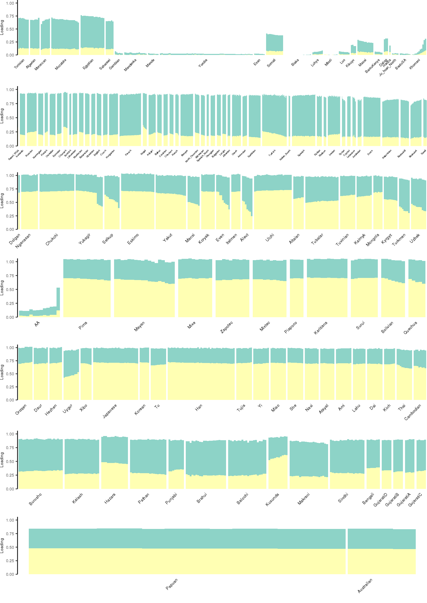
| Version | Author | Date |
|---|---|---|
| dfe02ad | Joseph Marcus | 2020-05-09 |
[1] "K=3 | scale_loadings=TRUE"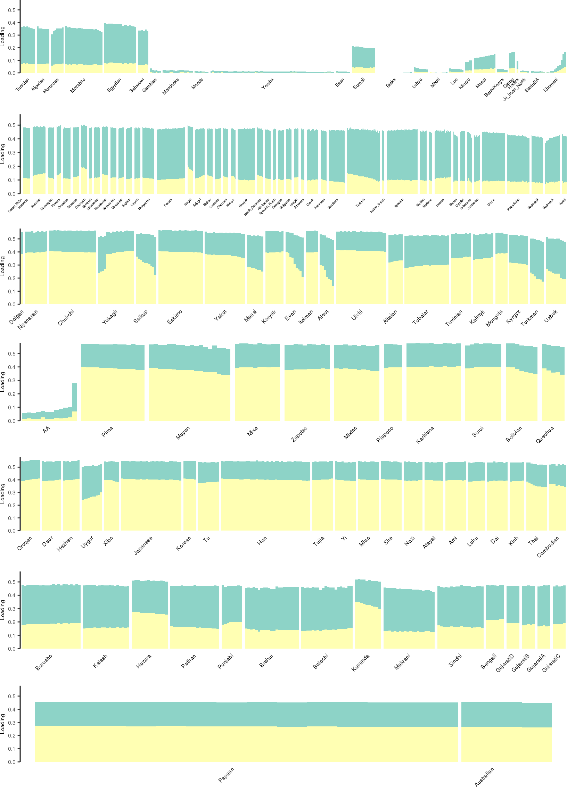
| Version | Author | Date |
|---|---|---|
| dfe02ad | Joseph Marcus | 2020-05-09 |
[1] "K=4 | scale_loadings=FALSE"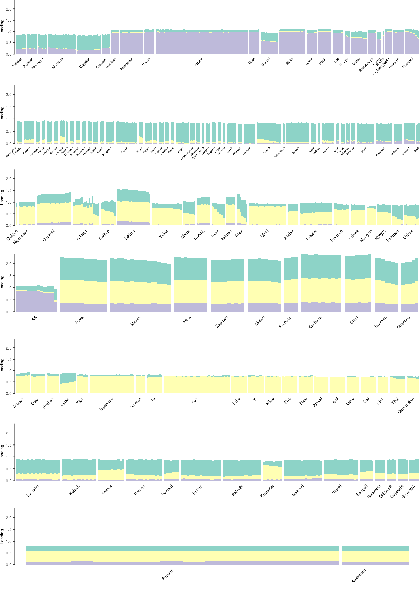
| Version | Author | Date |
|---|---|---|
| dfe02ad | Joseph Marcus | 2020-05-09 |
[1] "K=4 | scale_loadings=TRUE"
| Version | Author | Date |
|---|---|---|
| dfe02ad | Joseph Marcus | 2020-05-09 |
[1] "K=5 | scale_loadings=FALSE"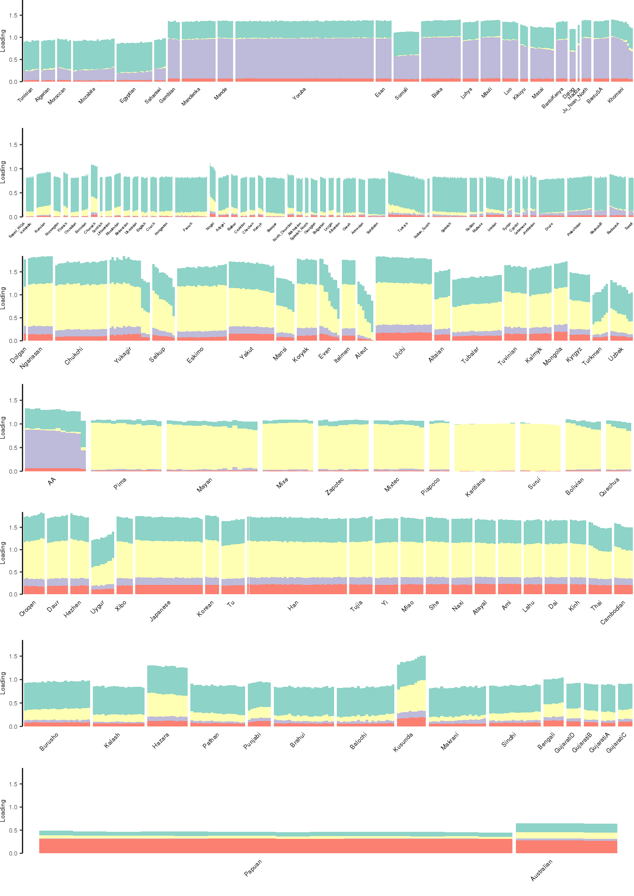
| Version | Author | Date |
|---|---|---|
| dfe02ad | Joseph Marcus | 2020-05-09 |
[1] "K=5 | scale_loadings=TRUE"
| Version | Author | Date |
|---|---|---|
| dfe02ad | Joseph Marcus | 2020-05-09 |
[1] "K=6 | scale_loadings=FALSE"
| Version | Author | Date |
|---|---|---|
| dfe02ad | Joseph Marcus | 2020-05-09 |
[1] "K=6 | scale_loadings=TRUE"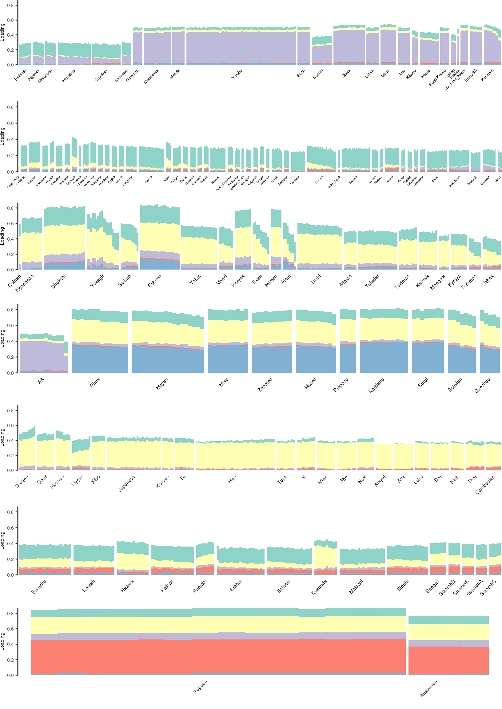
| Version | Author | Date |
|---|---|---|
| dfe02ad | Joseph Marcus | 2020-05-09 |
[1] "K=7 | scale_loadings=FALSE"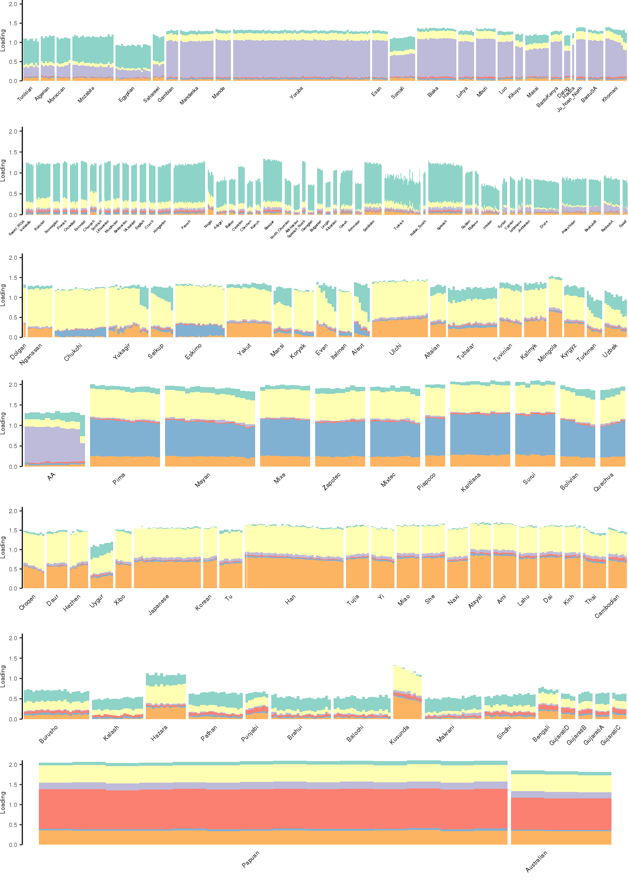
| Version | Author | Date |
|---|---|---|
| dfe02ad | Joseph Marcus | 2020-05-09 |
[1] "K=7 | scale_loadings=TRUE"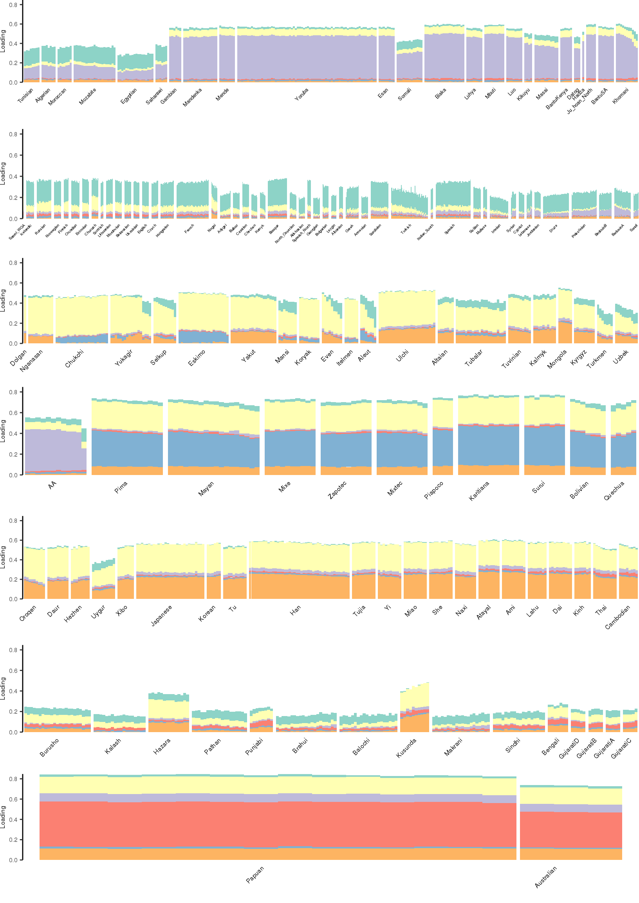
| Version | Author | Date |
|---|---|---|
| dfe02ad | Joseph Marcus | 2020-05-09 |
[1] "K=8 | scale_loadings=FALSE"
| Version | Author | Date |
|---|---|---|
| dfe02ad | Joseph Marcus | 2020-05-09 |
[1] "K=8 | scale_loadings=TRUE"
| Version | Author | Date |
|---|---|---|
| dfe02ad | Joseph Marcus | 2020-05-09 |
[1] "K=9 | scale_loadings=FALSE"
| Version | Author | Date |
|---|---|---|
| dfe02ad | Joseph Marcus | 2020-05-09 |
[1] "K=9 | scale_loadings=TRUE"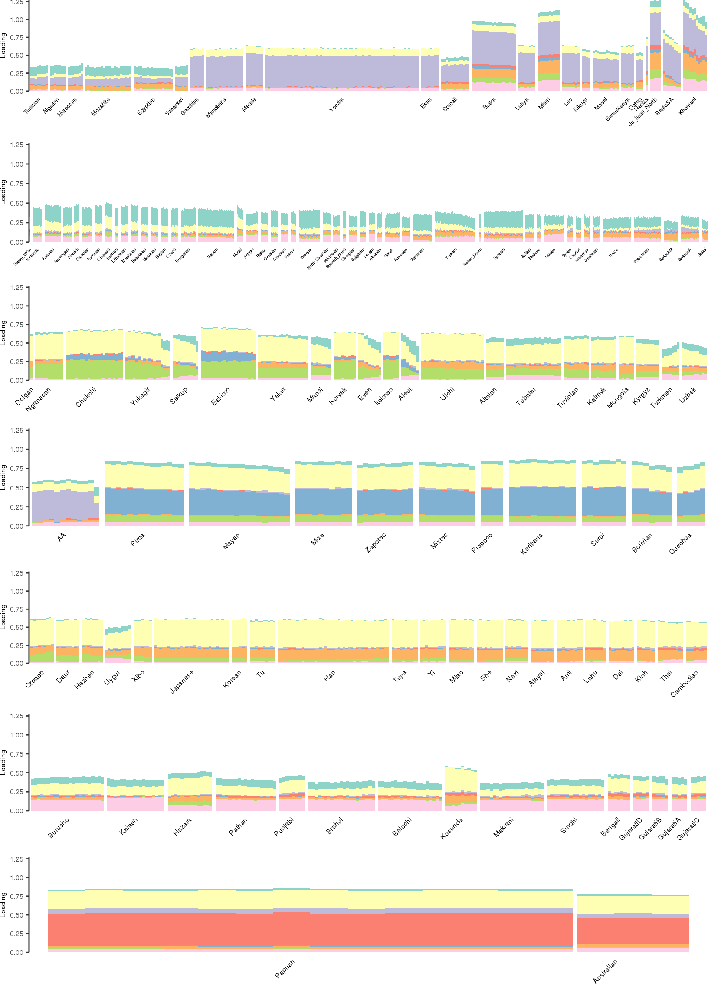
| Version | Author | Date |
|---|---|---|
| dfe02ad | Joseph Marcus | 2020-05-09 |
[1] "K=10 | scale_loadings=FALSE"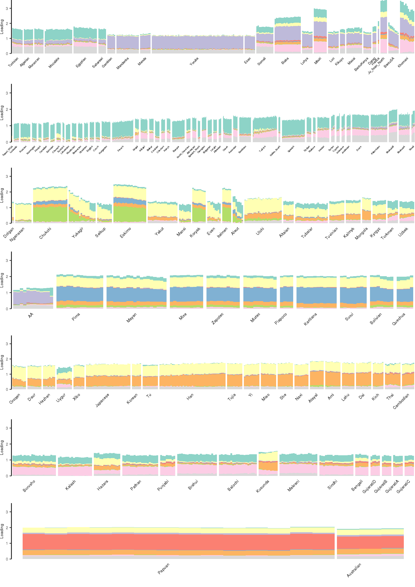
| Version | Author | Date |
|---|---|---|
| dfe02ad | Joseph Marcus | 2020-05-09 |
[1] "K=10 | scale_loadings=TRUE"
| Version | Author | Date |
|---|---|---|
| dfe02ad | Joseph Marcus | 2020-05-09 |
[1] "K=11 | scale_loadings=FALSE"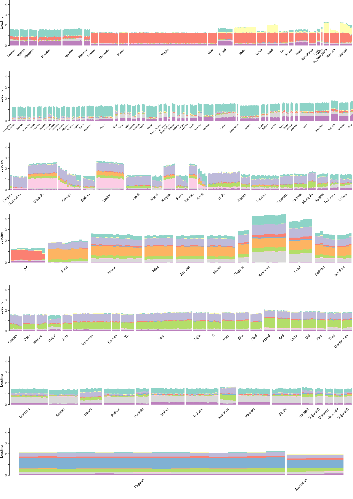
| Version | Author | Date |
|---|---|---|
| dfe02ad | Joseph Marcus | 2020-05-09 |
[1] "K=11 | scale_loadings=TRUE"
| Version | Author | Date |
|---|---|---|
| dfe02ad | Joseph Marcus | 2020-05-09 |
[1] "K=12 | scale_loadings=FALSE"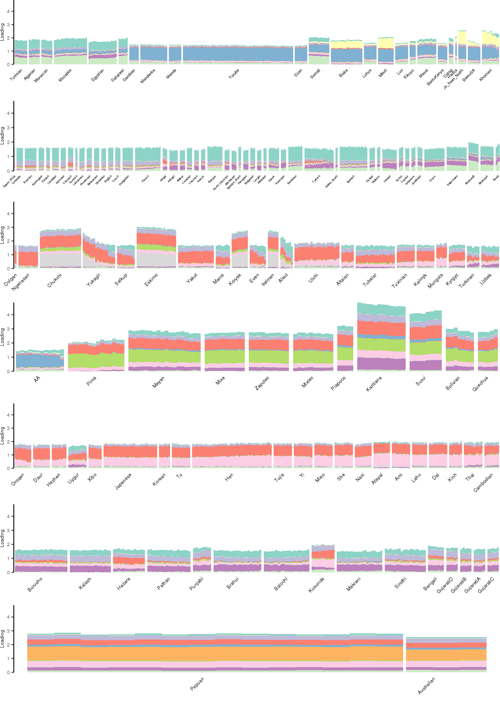
| Version | Author | Date |
|---|---|---|
| dfe02ad | Joseph Marcus | 2020-05-09 |
[1] "K=12 | scale_loadings=TRUE"
| Version | Author | Date |
|---|---|---|
| dfe02ad | Joseph Marcus | 2020-05-09 |
sessionInfo()R version 3.5.1 (2018-07-02)
Platform: x86_64-pc-linux-gnu (64-bit)
Running under: Scientific Linux 7.4 (Nitrogen)
Matrix products: default
BLAS/LAPACK: /software/openblas-0.2.19-el7-x86_64/lib/libopenblas_haswellp-r0.2.19.so
locale:
[1] C
attached base packages:
[1] stats graphics grDevices utils datasets methods base
other attached packages:
[1] cowplot_0.9.4 knitr_1.20 RColorBrewer_1.1-2
[4] dplyr_0.8.5 tidyr_1.0.2 ggplot2_3.3.0
loaded via a namespace (and not attached):
[1] Rcpp_1.0.4.6 drift.alpha_0.0.9 plyr_1.8.4
[4] compiler_3.5.1 pillar_1.4.3 later_0.7.5
[7] git2r_0.26.1 workflowr_1.6.1 tools_3.5.1
[10] digest_0.6.25 lattice_0.20-38 evaluate_0.14
[13] lifecycle_0.2.0 tibble_3.0.1 gtable_0.3.0
[16] pkgconfig_2.0.3 rlang_0.4.5 Matrix_1.2-15
[19] parallel_3.5.1 yaml_2.2.0 ebnm_0.1-24
[22] invgamma_1.1 flashier_0.2.4 withr_2.2.0
[25] stringr_1.4.0 fs_1.3.1 vctrs_0.2.4
[28] rprojroot_1.3-2 grid_3.5.1 tidyselect_1.0.0
[31] glue_1.4.0 R6_2.4.1 rmarkdown_1.10
[34] mixsqp_0.3-17 irlba_2.3.3 farver_2.0.3
[37] reshape2_1.4.3 ashr_2.2-50 purrr_0.3.4
[40] magrittr_1.5 whisker_0.3-2 backports_1.1.6
[43] scales_1.1.0 promises_1.0.1 htmltools_0.3.6
[46] ellipsis_0.3.0 assertthat_0.2.1 colorspace_1.4-1
[49] httpuv_1.4.5 labeling_0.3 stringi_1.4.6
[52] munsell_0.5.0 truncnorm_1.0-8 SQUAREM_2020.2
[55] crayon_1.3.4